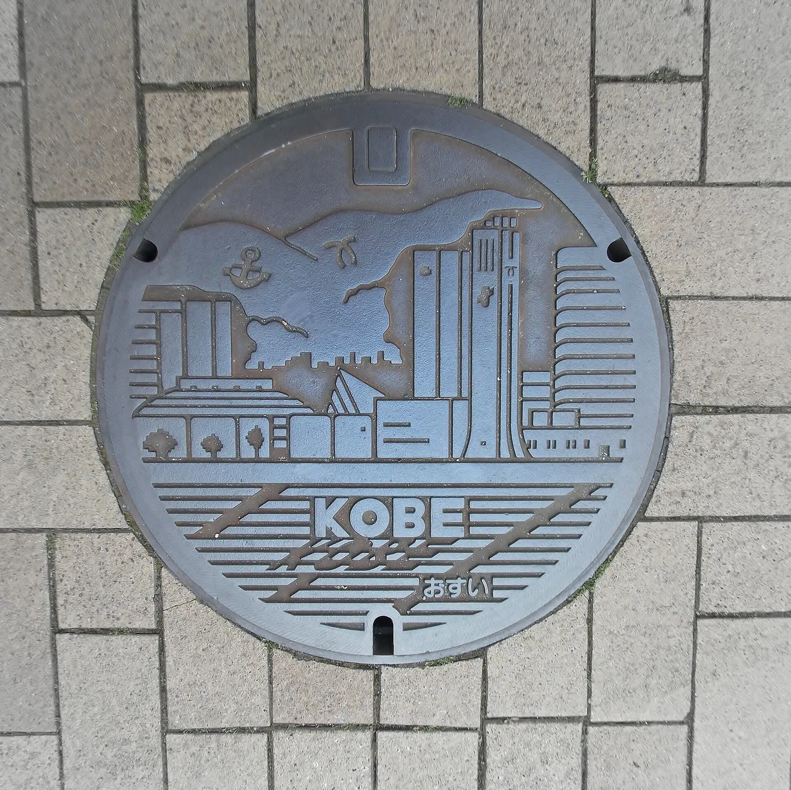

Penutup manhole karakter di Jepang
Lihatlah ke bawah di kota Jepang yang tepat, dan penutup saluran di bawah kakimu adalah Conan Edogawa, unit Evangelion, atau seluruh geng Lupin III. Di luar Pokéfuta Pokémon dan penutup Gundam yang sudah terkenal, puluhan kota telah mengubah tutup selokan mereka menjadi seni jalanan gratis dan permanen yang terkait dengan seri kesayangan — biasanya karena penciptanya lahir di sana atau ceritanya berlatar di sana. Panduan ini memetakan manhole karakter utama berdasarkan seri dan kota, menjelaskan mengapa ada di sana, dan menunjukkan cara menemukannya.

Apa itu manhole karakter
Sebuah manhole karakter (キャラクターマンホール) adalah penutup saluran yang berfungsi, dicetak atau dilukis dengan desain anime, manga, game, atau maskot. Mereka berada di jalan-jalan umum biasa — gratis untuk dilihat, difoto, dan diinjak — dan merupakan perlengkapan permanen, bukan pajangan sementara. Para penggemar menyebut hobi melacaknya sebagai semacam seichi junrei (聖地巡礼, "ziarah ke tanah suci") di tingkat trotoar.
Mereka berada dalam tradisi Jepang yang jauh lebih besar tentang manhole desain (デザインマンホール) — penutup dekoratif yang menampilkan kastil, bunga, dan festival lokal. Penutup karakter adalah cabang berlisensi IP dari tradisi tersebut, dan cenderung berkumpul di satu kota daripada tersebar ke seluruh negeri, itulah yang membuat masing-masing menjadi destinasi tersendiri.
Bagaimana proyek ini bekerja
Manhole karakter biasanya ada karena salah satu dari tiga alasan — dan mengetahui alasannya membantu kamu memprediksi di mana harus mencari:
- Kota asal sang pencipta. Sebuah kota menghormati pencipta manga atau anime yang lahir di sana — inilah mengapa penutup Lupin III ada di Hamanaka dan penutup Ultraman ada di Sukagawa.
- Latar cerita. Penutup dipasang di tempat fiksi berlangsung, seperti Sailor Moon di Minato, Tokyo (lingkungan nyata Usagi, Azabu-Jūban).
- Program IP nasional. Pemegang hak menyebarkan penutup ke banyak kota — Pokéfuta Pokémon melalui "Pokémon Local Acts", dan penutup Gundam yang disumbangkan ke kota-kota di seluruh negeri.
Karena ini adalah proyek resmi berlisensi, masing-masing biasanya memiliki peta atau daftar dari kota, pemegang hak, atau dinas pariwisata — cara yang andal untuk menemukan lokasi pasti daripada berkeliaran tanpa tujuan.
Berdasarkan seri & kota
Pilihan manhole karakter terkenal dan di mana pusatnya berada. Penutup baru terus ditambahkan dan kadang dipindahkan, jadi konfirmasikan lokasi terkini di halaman resmi setiap kota sebelum bepergian.
| Seri | Kota / area utama | Prefektur | Mengapa ada di sana | Panduan gratis |
|---|---|---|---|---|
| Sailor Moonセーラームーン | Minato, Tokyo | Tokyo | Latar nyata cerita — penutup di sekitar Azabu-Jūban dan Tokyo Tower — panduan lengkap → | Tokyo → |
| Detective Conan名探偵コナン | Hokuei (Conan Town) | Tottori | Kota asal pencipta Gosho Aoyama; puluhan penutup bertema Conan berjajar di "Conan Street" | Tottori → |
| Lupin IIIルパン三世 | Hamanaka | Hokkaido | Kota asal pencipta Lupin III, Monkey Punch (Kazuhiko Katō); penutup bergambar geng Lupin tersebar di sekitar kota | Hokkaido → |
| Ultramanウルトラマン | Sukagawa | Fukushima | Kota asal legenda efek khusus Eiji Tsuburaya; karakter Ultraman berjajar di jalan dari stasiun | Fukushima → |
| Evangelionエヴァンゲリオン | Tokorozawa (penutup LED); Hakone = kerjasama jalanan | Saitama / Kanagawa | Penutup Eva yang terkonfirmasi adalah set bertenaga surya di Tokorozawa; Hakone — "Tokyo-3" yang nyata — memiliki papan tanda Eva dan pos NERV tetapi tidak ada penutup Eva yang terkonfirmasi — panduan lengkap → | Saitama → |
| Penutup LED anime複数作品 | Tokorozawa (Tokorozawa Sakura Town) | Saitama | Penutup bertenaga surya menampilkan Evangelion, Gundam, dan lainnya yang bersinar setelah gelap | Saitama → |
| Ultraman (Tokyo)ウルトラマン | Setagaya (Soshigaya) | Tokyo | Dekat markas lama Tsuburaya Productions; penutup bertema pahlawan Ultraman di lingkungan sekitar | Tokyo → |
| Pokémon (Pokéfuta)ポケふた | Seluruh negeri | Banyak | Program Pokémon Local Acts; Pokémon duta ditempatkan per prefektur | Pokéfuta → |
| Gundamガンダム | Seluruh negeri | Banyak | Penutup RX-78-2 dan Zeon disumbangkan ke kota-kota di seluruh Jepang | Gundam → |
Ini adalah peta awal, bukan daftar lengkap — Jepang memiliki penutup karakter untuk banyak seri lainnya, dan kota-kota terus menambahkannya secara rutin. Anggap "kota utama" sebagai tempat penutup suatu seri terkonsentrasi, dan selalu periksa halaman kota atau pemegang hak untuk jumlah terkini dan lokasi pastinya.
Cara menemukannya
Dua program nasional memiliki peta resmi; yang spesifik per kota mengandalkan halaman lokal dan pusat wisata.
| Untuk… | Di mana mencarinya |
|---|---|
| Pokéfuta | Peta manhole Pokémon resmi di local.pokemon.jp/en/manhole — dapat dicari berdasarkan prefektur |
| Seri spesifik kota (Conan, Lupin, Ultraman, Eva) | Situs pariwisata kota atau konter informasi wisata dekat stasiun utama — biasanya mereka membagikan peta penutup |
| Penutup desain & karakter umum | Peta penggemar dan komunitas manhole desain; cocokkan dengan halaman resmi kota sebelum bepergian |
Penutup karakter adalah tutup saluran nyata yang digunakan di jalan umum. Perhatikan lalu lintas saat memotret, jangan menghalangi trotoar atau jalan masuk, dan bersikaplah tenang di lingkungan perumahan — kesopanan yang sama yang membuat tempat-tempat ziarah anime tetap ramah bagi para penggemar.
Hubungannya dengan kartu manhole
Pisahkan dua hal ini. Sebuah manhole karakter adalah penutup fisik di jalan. Sebuah kartu manhole adalah kartu kolektibel gratis untuk penutup desain, yang dibagikan langsung di titik pengambilan lokal. Keduanya hanya kadang-kadang tumpang tindih: beberapa penutup desain memiliki kartu yang cocok, tetapi sebagian besar penutup karakter tidak, dan sebagian besar kartu adalah untuk desain sipil non-karakter. Jika kamu secara khusus menginginkan kartu sekaligus foto, periksa daftar kartu resmi secara terpisah — jangan berasumsi setiap penutup karakter disertai kartu.
Beberapa tautan di atas adalah tautan afiliasi. Kami mungkin mendapatkan komisi tanpa biaya tambahan bagimu. Kami hanya mencantumkan layanan yang kami gunakan sendiri.
Bahasa Jepang yang akan kamu gunakan
Beberapa kata membantu saat kamu meminta peta penutup di konter informasi wisata, atau membaca papan tanda kota.
| Bahasa Jepang | Cara baca | Arti |
|---|---|---|
| マンホール | manhōru | manhole (penutup) |
| キャラクター | kyarakutā | karakter — seperti pada penutup karakter |
| デザインマンホール | dezain manhōru | manhole desain — tradisi penutup dekoratif |
| 聖地巡礼 | seichi junrei | "ziarah ke tanah suci" — mengunjungi tempat nyata dari sebuah karya |
| 地図 | chizu | peta — minta peta penutup |
| 観光案内所 | kankō annaijo | pusat informasi wisata |
| 作者 | sakusha | pencipta / pengarang sebuah karya |
| 出身 | shusshin | kota asal / tempat asal — alasan banyak penutup ada |
Ingin kata-kata ini mudah diingat? Kuis pertempuran JLPT gratis melatih kosakata perjalanan dan budaya seperti ini dengan pengulangan berjarak.
Penutup karakter secara alami berpadu dengan permainan koleksi berbasis lokasi lainnya di Jepang: Pokéfuta →, manhole Gundam →, kartu manhole →, ziarah anime →, dan stempel stasiun →. Banyak penggemar menyelesaikan beberapa sekaligus dalam satu prefektur.
Pertanyaan umum
T. Di mana penutup manhole Detective Conan berada?
A. Di Hokuei, Tottori — "Conan Town", kota asal pencipta Gosho Aoyama. Puluhan penutup bertema Conan berjajar di "Conan Street" antara stasiun dan Gosho Aoyama Manga Factory, bersama patung perunggu para karakter.
T. Di mana penutup manhole Lupin III berada?
A. Di Hamanaka, Hokkaido, kota asal pencipta Lupin III, Monkey Punch (Kazuhiko Katō). Penutup bergambar geng Lupin dipasang di seluruh kota, yang merayakan seri ini sepanjang tahun.
T. Di mana penutup manhole Ultraman berada?
A. Paling terkenal di Sukagawa, Fukushima — kota asal legenda efek khusus Eiji Tsuburaya, di mana karakter Ultraman berjajar di jalan dari stasiun ke pusat komunitas. Ada juga penutup Ultraman di Setagaya (Soshigaya), Tokyo, dekat Tsuburaya Productions.
T. Kota mana yang memiliki penutup manhole Evangelion?
A. Penutup Eva yang terkonfirmasi berada di Tokorozawa, Saitama, di antara penutup anime LED bertenaga surya. Hakone — dasar dunia nyata untuk "Tokyo-3" dalam seri ini — memiliki papan tanda Eva dan pos NERV tetapi, meski beberapa panduan mengklaim sebaliknya, tidak ada penutup manhole Eva yang terkonfirmasi (lihat panduan Evangelion × Hakone kami).
T. Apakah manhole karakter gratis untuk dilihat?
A. Ya. Mereka adalah penutup saluran yang berfungsi di jalan umum, gratis untuk dilihat dan difoto. Cukup perhatikan lalu lintas dan trotoar, serta bersikaplah tenang di area perumahan.
T. Apakah manhole karakter sama dengan kartu manhole?
A. Tidak. Manhole karakter adalah penutup fisik di jalan; kartu manhole adalah kartu kolektibel gratis terpisah untuk penutup desain, yang diberikan langsung. Beberapa penutup memiliki kartu yang cocok, tetapi sebagian besar penutup karakter tidak.